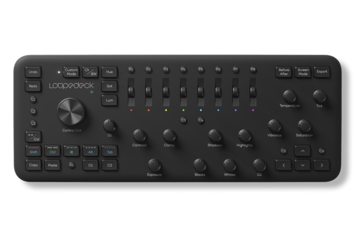

Dedicated controls. Customizable workflows. A family of consoles that brought a more tactile approach to editing, creating and streaming.
These products are discontinued. This overview is preserved for reference.

Photo & video editing
Loupedeck+
A dedicated editing console with controls labeled for Adobe Lightroom Classic. Loupedeck+ brought hands-on adjustments, color grading and customizable shortcuts to photo and video workflows.
Adjustment dials · Color wheels · Programmable buttons
A compact creative console combining tactile controls and touchscreens. CT offered customizable workspaces for editing, audio and design, with a touch-sensitive central wheel for precise adjustments.
A versatile console for creators and streamers. Live paired customizable touch buttons with analog dials to control apps, switch scenes, adjust audio and organize everyday actions into workspaces.
A streamlined console designed for streaming and everyday tasks. Live S provided touch controls for scenes, shortcuts and custom actions, plus two dials for adjustments such as audio levels.
The original Loupedeck introduced dedicated physical controls for photo editing, bringing frequently used adjustments out of menus and into the hands of photographers.
It requires Loupedeck Software 5.1 or earlier. The 6.4.1 and 5.9.1 installers on this site do not support the Original console.